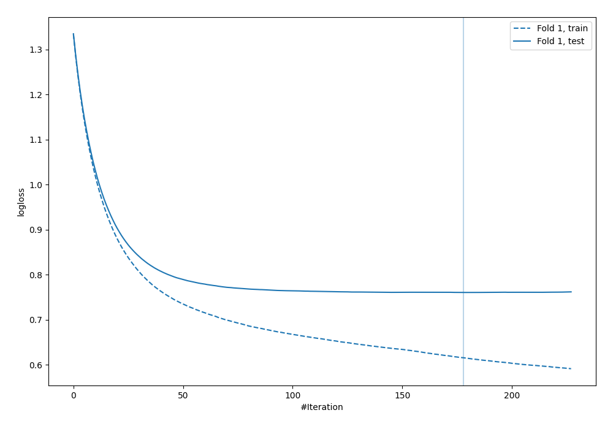
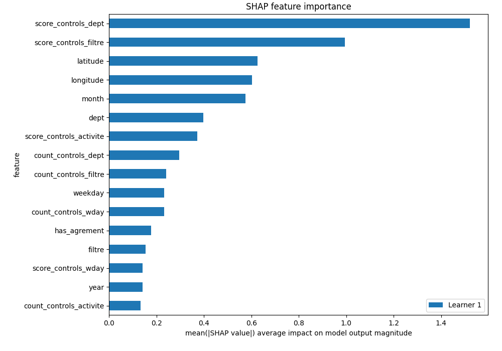
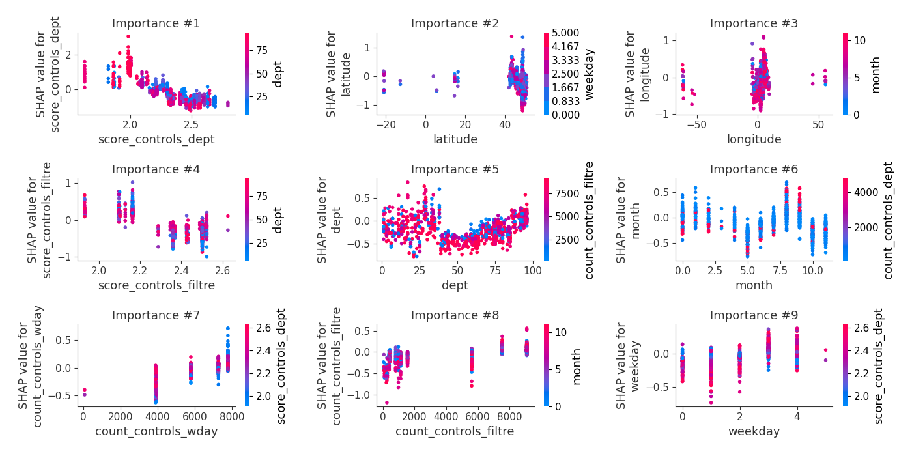
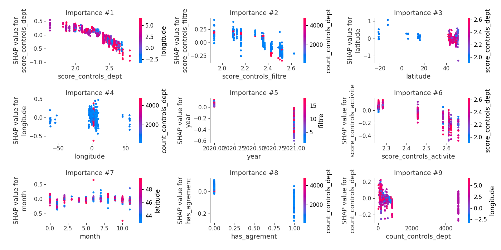
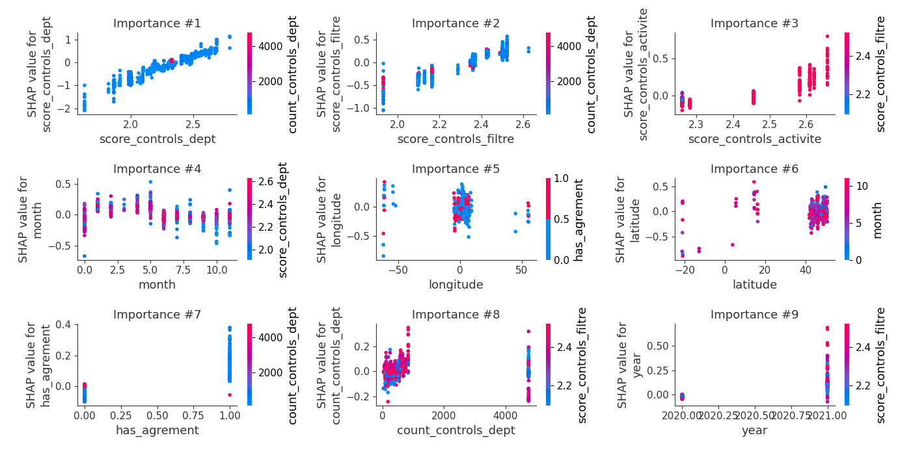
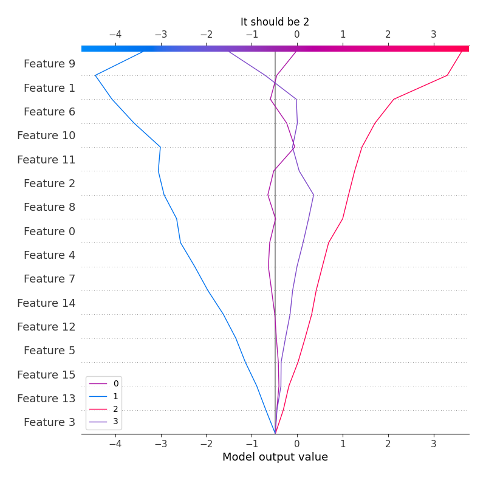
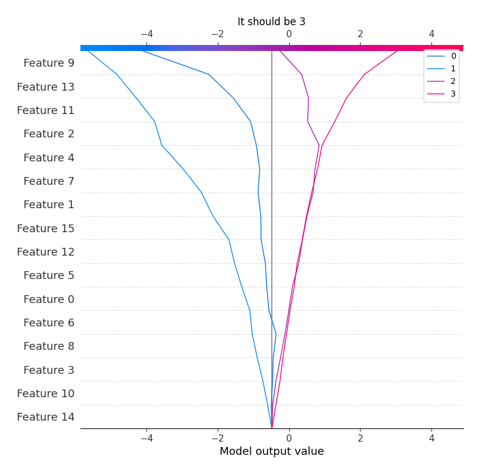
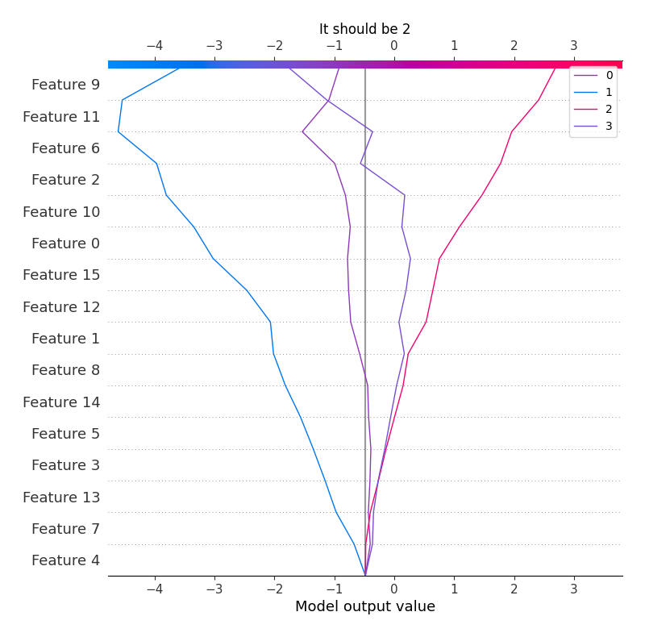

Summary of 4_Default_Xgboost
<< Go back
Extreme Gradient Boosting (Xgboost)
- objective: multi:softprob
- eval_metric: mlogloss
- eta: 0.075
- max_depth: 6
- min_child_weight: 1
- subsample: 1.0
- colsample_bytree: 1.0
- num_class: 4
- explain_level: 2
Validation
- validation_type: split
- train_ratio: 0.75
- shuffle: True
- stratify: True
Optimized metric
logloss
Training time
20.7 seconds
Metric details
|
0 |
1 |
2 |
3 |
accuracy |
macro avg |
weighted avg |
logloss |
| precision |
0.541667 |
0.5 |
0.642049 |
0.659494 |
0.649204 |
0.585802 |
0.644121 |
0.760418 |
| recall |
0.0460993 |
0.0526316 |
0.719612 |
0.646135 |
0.649204 |
0.366119 |
0.649204 |
0.760418 |
| f1-score |
0.0849673 |
0.0952381 |
0.678622 |
0.652746 |
0.649204 |
0.377893 |
0.633992 |
0.760418 |
| support |
282 |
19 |
2682 |
2419 |
0.649204 |
5402 |
5402 |
0.760418 |
Confusion matrix
|
Predicted as 0 |
Predicted as 1 |
Predicted as 2 |
Predicted as 3 |
| Labeled as 0 |
13 |
0 |
211 |
58 |
| Labeled as 1 |
0 |
1 |
14 |
4 |
| Labeled as 2 |
6 |
1 |
1930 |
745 |
| Labeled as 3 |
5 |
0 |
851 |
1563 |
Learning curves

Permutation-based Importance

SHAP Importance

SHAP Dependence plots
Dependence 0 (Fold 1)

Dependence 1 (Fold 1)

Dependence 2 (Fold 1)

Dependence 3 (Fold 1)

SHAP Decision plots
Worst decisions for selected sample 1 (Fold 1)

Worst decisions for selected sample 2 (Fold 1)

Worst decisions for selected sample 3 (Fold 1)

Worst decisions for selected sample 4 (Fold 1)

Best decisions for selected sample 1 (Fold 1)

Best decisions for selected sample 2 (Fold 1)

Best decisions for selected sample 3 (Fold 1)

Best decisions for selected sample 4 (Fold 1)

<< Go back